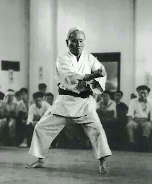
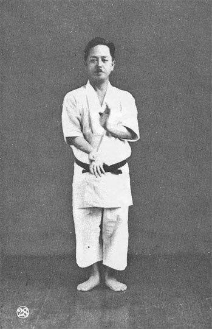
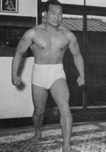

Mestres Importantes

Gichin Funakoshi
Considerado o pai do Karatê moderno e fundador do estilo Shotokan.

Kenwa Mabuni
Criador do estilo Shito-Ryu, um dos mais praticados do mundo.

Mas Oyama
Fundador do Kyokushin, conhecido por seu treinamento intenso.
Importância dos Mestres
Os mestres de Karatê tiveram papel fundamental na preservação e expansão da arte marcial pelo mundo. Graças aos seus ensinamentos, milhões de pessoas aprendem não apenas técnicas de combate, mas também valores como humildade, disciplina e respeito.
Competições
O Karatê possui campeonatos nacionais e internacionais organizados pela World Karate Federation (WKF). A modalidade também esteve presente nos Jogos Olímpicos de Tóquio 2020, aumentando ainda mais sua visibilidade mundial.